01La lista
Si scrive come parli.
Scrivi o detta più cose insieme — «latte, 2 kg di patate, pane» — e si dispongono da sole nell’ordine degli scaffali, non in ordine alfabetico. Il negozio lo attraversi una volta.
Una lista della spesa nell’ordine in cui attraversi il negozio, 563 ricette e un solo elenco di ciò che in casa non si può mangiare — vale per la spesa come per i fornelli.


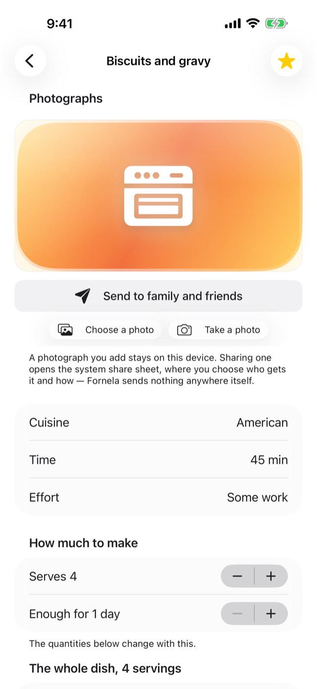
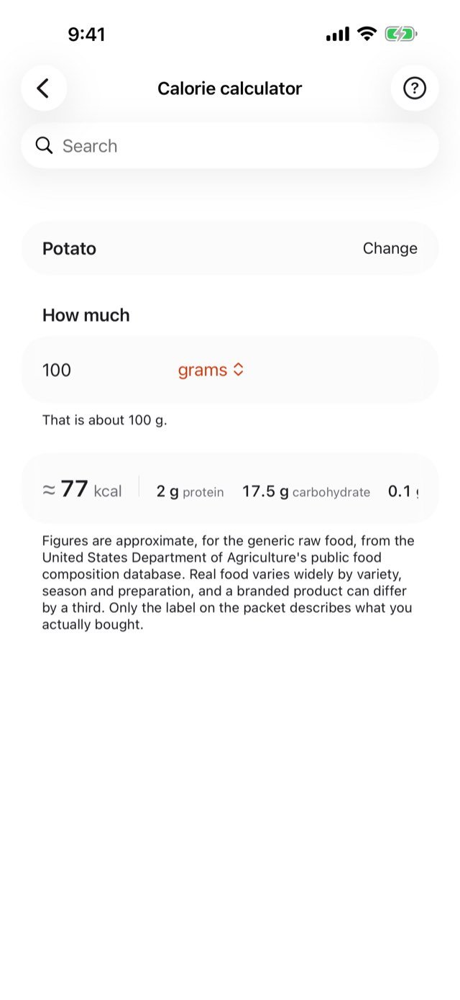
Qualcuno in questa casa non può mangiare una cosa, e tutti gli altri devono ricordarsene.
Un elenco, impostato una volta, governa la spesa, la fotocamera e tutte le 563 ricette. Davanti allo scaffale non serve più ricordare.
Scrivi o detta più cose insieme — «latte, 2 kg di patate, pane» — e si dispongono da sole nell’ordine degli scaffali, non in ordine alfabetico. Il negozio lo attraversi una volta.
Impostato una volta, vale ovunque: scritto, detto, toccato con la fotocamera o portato da una ricetta. Quarantotto allergeni, dagli otto regolamentati a quelli che nessuna norma elenca. Cambiarlo richiede un codice, perché un elenco da cui qualcuno dipende non si modifichi per sbaglio.
Ogni ricetta ha la sua illustrazione, e al suo posto puoi mettere una tua foto. Un pulsante manda il piatto a familiari o amici, con la ricetta intera sotto.
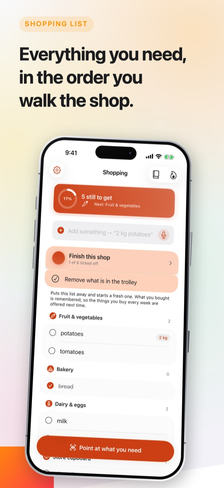
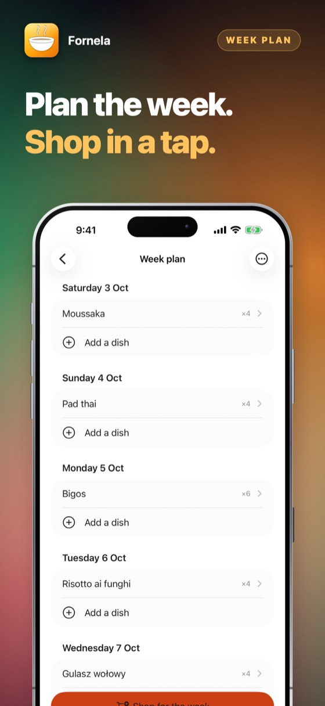
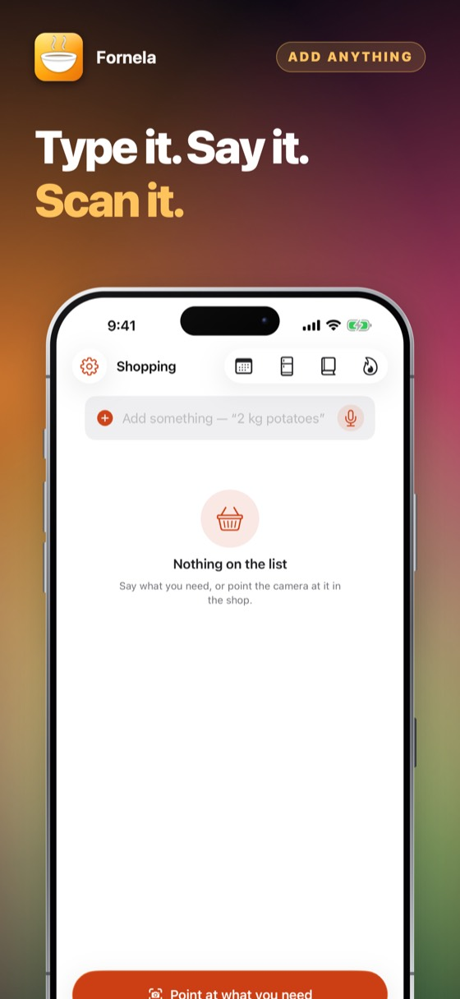
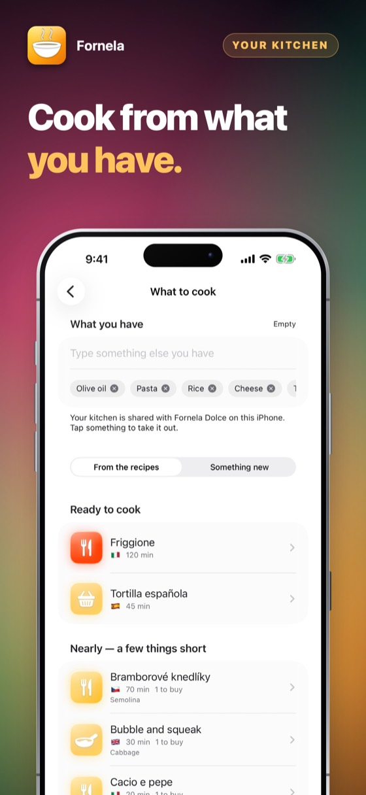
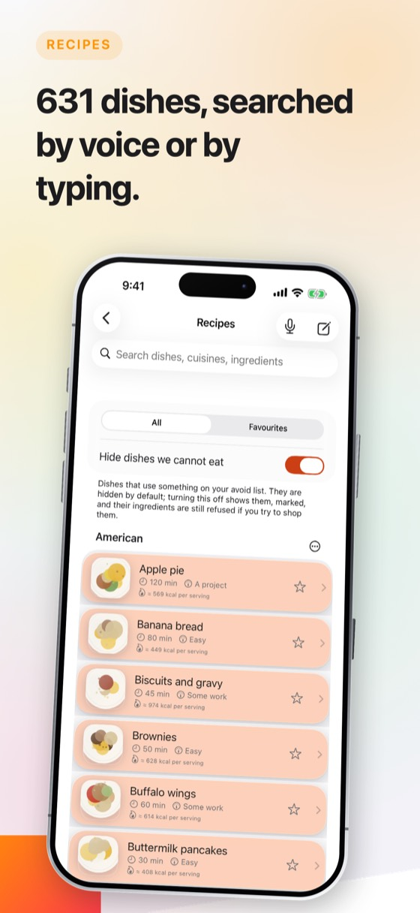
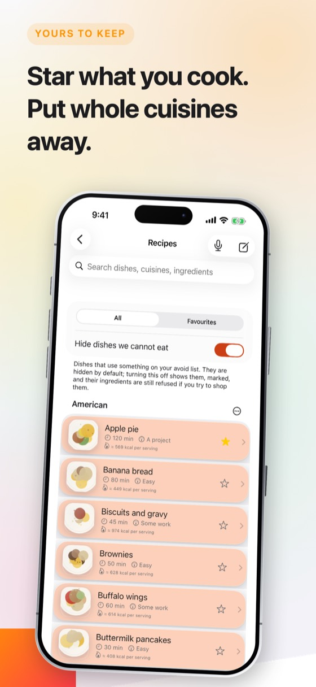
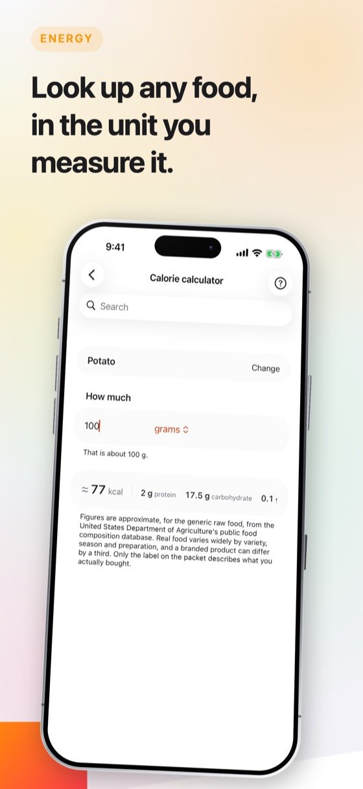
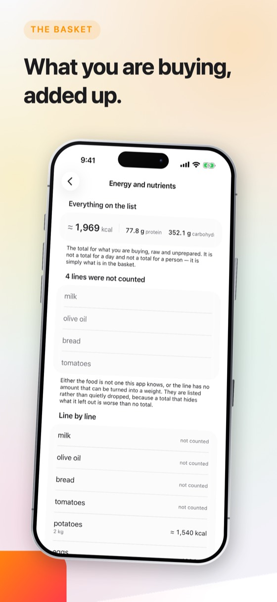
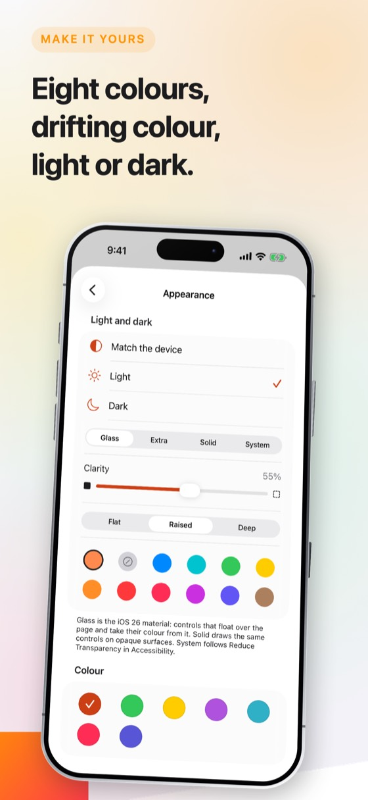
Sei cose, nell’ordine in cui le faresti davvero la prima sera. Nessuna richiede un account né il segnale.
Al primo avvio scegli un codice e poi spunta le allergie e le diete con cui vive questa casa. Il codice viene chiesto solo quando quella lista cambia, così nessuno la modifica per sbaglio. Annota il codice di recupero: non c’è alcun server, quindi nessuno può cercartelo.
Scrivi «latte, 2 kg di patate, 500 g di manzo 5 % di grassi» e diventano tre righe con le quantità giuste. Oppure tieni premuto il microfono e dillo. Oppure punta la fotocamera su uno scaffale e tocca il prodotto — l’obiettivo mette a fuoco dove hai toccato e tu confermi prima che venga aggiunto qualcosa.
La lista si raggruppa come è disposto un negozio: ortofrutta, panetteria, latticini, macelleria, dispensa. Spunta man mano che riempi il carrello. Tutto ciò che è nelle esclusioni viene rifiutato al momento dell’aggiunta, con la motivazione.
Apri «Che cosa posso cucinare»: Fornela ordina le sue 563 ricette secondo quanto poco ti manca, ti dice che cosa comprare per finire il piatto e ti accompagna nella cottura. Puoi scrivere che cosa c’è in frigo invece di fotografarlo.
Ogni ricetta e ogni lista mostra energia e macronutrienti. Se indichi una percentuale di grassi — «manzo 5 %» — viene usata quella e non la media dello scaffale, perché un macinato al 5 % e uno al 20 % differiscono quasi del doppio.
Aggiungi la tua fotografia del piatto finito; un pulsante manda immagine e ricetta intera a famiglia e amici, con ciò che già usi — Messaggi, WhatsApp, mail. Ogni ricetta si stampa anche come PDF di una pagina, con le informazioni sugli allergeni per prime.
Le liste della spesa le fanno tutte. Questo è ciò che succede quando un’app viene costruita attorno a ciò che una casa non può mangiare.
| La domanda | La risposta consueta | Fornela |
|---|---|---|
| In casa c’è un celiaco | Una nota da ricordare | Un tocco, e governa la lista, la fotocamera e ogni ricetta |
| Una ricetta contiene un ingrediente a rischio | Compare lo stesso | Viene nascosta, o mostrata segnalata e rifiutata se provi a comprarla |
| Sei al supermercato senza campo | Una rotellina che gira | Funziona tutto; niente ha mai avuto bisogno di una connessione |
| L’azienda cambia proprietario | Le tue liste sono sul loro server | Le tue liste sono sul tuo telefono, e lo sono sempre state |
Inquadra un prodotto e toccalo, oppure tieni qualcosa di fresco nel quadrato al centro e premi il pulsante. L’obiettivo mette a fuoco dove hai toccato, il telefono dice che cosa crede di vedere, e tu confermi prima che finisca in lista.
Pronuncia il nome di un piatto. Il riconoscimento gira sul dispositivo, quindi non viene inviato nulla da nessuna parte.
Ogni ricetta diventa un PDF di una pagina con le informazioni sugli allergeni per prime, nella tua lingua e in inglese.
Una stella, e il piatto ti aspetta nei preferiti. Scorri via quello che non farai mai, o metti da parte un’intera cucina in una volta — e riprendi tutto quando vuoi.
Scala un piatto a una settimana di cene e la spesa si combina in quantità uniche invece di sette liste.
Aggiungi i piatti di famiglia con le loro fotografie e i loro passaggi. Stanno accanto a quelle incluse e rispettano le stesse esclusioni.
Otto colori, undici sfondi, chiaro o scuro, e diciassette lingue che seguono l’impostazione del dispositivo.
Nessun account, nessuna registrazione. Prova tutta l’app per tre giorni; poi te lo chiede una volta sola, e decidi tu.
Presto su App StoreI prezzi sono indicati nell’App Store, nella tua valuta. Tre giorni gratis, poi un mese o un anno alla volta — puoi annullare quando vuoi nelle Impostazioni dell’iPhone.
No, e l’app lo dice proprio dove conta. Fornela confronta nomi con una lista che hai scritto tu. Non può sapere che cosa c’è in un piatto senza etichetta, non rileva contaminazioni in cucina e non sostituisce né la lettura di un’etichetta né il chiedere.
Trattala come un promemoria e nulla di più. Leggi la confezione. Ogni volta.
No, e non lo farà mai. Fornela mostra che cosa c’è in un alimento — energia, proteine, carboidrati, grassi — come fa una confezione. Non ha opinioni su che cosa dovresti mangiare, non chiede età, peso, altezza o sesso, non fissa alcun obiettivo giornaliero e non somma nulla nell’arco di una giornata.
Non è un dispositivo medico e non dà consigli dietetici. Per quello, rivolgiti a un medico o a un dietista.
Da USDA FoodData Central, la banca dati pubblica sulla composizione degli alimenti del Dipartimento dell’Agricoltura degli Stati Uniti. I valori sono per 100 g dell’alimento generico, crudo.
Sono approssimativi e l’app lo dice ovunque ne mostri uno. Il cibo reale varia per varietà, stagione e preparazione, e un prodotto di marca può differire di un terzo. Solo l’etichetta sulla confezione descrive ciò che hai davvero comprato.
Usa il codice di recupero mostrato durante la configurazione. Questa app non ha server né account, quindi nessuno — noi compresi — può cercarlo per te. Puoi rivederlo più tardi nelle impostazioni della lista delle esclusioni, dopo aver inserito il codice.
Ogni app si usa per intero per tre giorni prima di chiedere qualcosa. In Fornela, Fornela Dolce e Talkquote i giorni partono da soli la prima volta che apri l’app. Nelle app che si acquistano una volta, partono con un tocco su una prova gratuita di tre giorni nell’App Store: non viene addebitato nulla e nulla si rinnova. In ogni caso, finiti i giorni l’app te lo chiede una volta sola, e decidi tu.
Fornela, Fornela Dolce e Talkquote sono un abbonamento — mensile, o annuale a meno. I tre strumenti Sharpfield e Meterlume, Filmlume, Meterlume 120 e le app più recenti si acquistano una volta e non si rinnovano mai. In ogni caso hai l’app completa. Nessun livello, nessun pacchetto extra, niente di trattenuto — e il pagamento lo incassa Apple, quindi lo sviluppatore non vede mai una carta o un nome.
Sì. Disdici quando vuoi nell’App Store: tocca la tua foto in alto a destra, poi Abbonamenti. È l’unico posto dove si ferma un abbonamento — l’app non può farlo al posto tuo, perché i soldi li incassa Apple. Tieni tutto fino alla fine del periodo già pagato.
I rimborsi li fa Apple, non noi — non vediamo mai i tuoi dati di pagamento e non possiamo rimborsare. Vai su reportaproblem.apple.com, accedi e scegli l’acquisto.
Quello che hai comprato appartiene al tuo account Apple. Accedi su un iPad o su un iPhone nuovo con lo stesso account Apple, apri l’app e scegli Ripristina nella schermata d’acquisto. Non viene addebitato nulla di nuovo.
Un acquisto copre un account Apple. Non è condiviso in famiglia e non passa di mano in azienda — una seconda persona deve prendere il suo.
No. Non c’è account, non c’è accesso e non c’è server. Tutto ciò che l’app conserva è sul tuo dispositivo e sparisce quando la elimini.
L’unico traffico di rete che genera appartiene all’App Store, quando acquisti, ti abboni o ripristini.
Quella impostata sul dispositivo, se l’app è tradotta in quella lingua; altrimenti l’inglese. Non c’è alcuna impostazione di lingua da sbagliare — se cambi la lingua dell’iPhone, cambia anche l’app.
Pagamenti, rimborsi e disdette
Ogni pagamento per questa app lo incassa Apple. Vuol dire che solo Apple può ritrovare un addebito, fermare un abbonamento o rimborsare. Lo sviluppatore non vede mai una carta, un nome o un pagamento, e non può cambiarli.
La disdetta si fa sull’App Store, e da nessun’altra parte. Apri l’App Store, tocca la tua foto in alto a destra, poi Abbonamenti. Disdire ferma il prossimo pagamento; il periodo già pagato arriva alla fine. Fallo almeno 24 ore prima della scadenza, altrimenti il rinnovo passa lo stesso.
Il limite di ciò che può fare
Fornela non è un dispositivo medico e non dà consigli dietetici o medici. Confronta nomi con una lista che hai scritto tu. Non può sapere che cosa c’è in un piatto senza etichetta, non rileva contaminazioni e non sostituisce né la lettura di un’etichetta né il chiedere in cucina.
Chi ha un’allergia grave dovrebbe trattarla come un promemoria e nulla di più. Leggi la confezione. Ogni volta.
Il codice si sceglie una volta, al primo avvio, e viene chiesto solo quando cambiano le esclusioni stesse. Il codice di recupero mostrato all’inizio è l’unico modo per rientrare se lo dimentichi — questa app non ha server né account, quindi nessuno, noi compresi, può cercarlo per te. Puoi rivederlo più tardi nelle impostazioni della lista delle esclusioni, dopo aver inserito il codice.
Il riconoscimento gira sul dispositivo e conosce i prodotti comuni, non i marchi. Se non è sicuro lo dice invece di tirare a indovinare. Tocca il prodotto stesso perché l’obiettivo metta a fuoco lì, e aggiungi l’articolo a mano se ancora non ci riesce — ogni schermata che riconosce qualcosa ti permette anche di scrivere.
Un acquisto appartiene al tuo account Apple, non a un dispositivo. Su un telefono nuovo, o dopo una reinstallazione, apri l’app e scegli Ripristina nella schermata d’acquisto. Non ti verrà addebitato nulla una seconda volta.
Apri l’App Store, tocca la tua foto in alto a destra, poi Abbonamenti. È l’unico posto dove si ferma un abbonamento — l’app non può farlo al posto tuo, perché i soldi li incassa Apple. Disdire ferma il prossimo pagamento e lascia arrivare alla fine il periodo già pagato. Un acquisto una tantum non si rinnova e non ha nulla da disdire.
Ancora bloccato? Scrivi a alpenlume@gmail.com — indica quale app, quale iPhone o iPad e che cosa ti aspettavi succedesse.
Ultimo aggiornamento 10 settembre 2026.
In breve
Fornela non raccoglie nulla, non invia nulla e non ha account. Tutto ciò che conserva è sul tuo dispositivo.
Le tue liste, le tue esclusioni, le tue ricette e tutte le fotografie che aggiungi vivono nell’archivio proprio dell’app, sul tuo dispositivo. Il riconoscimento dalla fotocamera usa il classificatore di Apple, incluso in iOS; il riconoscimento vocale è impostato su «solo sul dispositivo» e non viene mai cambiato. Nessuna immagine e nessuna registrazione lascia il tuo iPhone o iPad.
Niente. Questa app non ha account, né accesso, né analisi d’uso, né identificativo pubblicitario, né servizio di segnalazione dei crash, né tracciamento di alcun tipo. Non viene creato alcun profilo e non viene condiviso nulla con nessuno.
Questa app non ha un server proprio: niente a cui accedere e niente che venga mai caricato allo sviluppatore. Che cosa fa con internet — per la maggior parte di queste app, nulla — è scritto sopra, sotto «Sul tuo dispositivo».
Due cose usano internet, ed entrambe sono di qualcun altro. L’App Store, quando acquisti, ti abboni o ripristini. E quando tu condividi qualcosa — un piatto, una ricetta, un documento — iOS lo consegna all’app che hai scelto, sia Messaggi, Mail o WhatsApp, e quella app lo invia con la propria connessione e la propria informativa. Niente parte finché non premi invia, e questa app non sa mai dove sia andato.
Il pagamento è gestito interamente da Apple. L’app non vede mai un numero di carta, un nome o un indirizzo; pone all’App Store una sola domanda — se questo account Apple possiede l’app — e riceve sì o no. La transazione è regolata dall’informativa privacy di Apple.
Questa app non è rivolta ai bambini e non raccoglie nulla da nessuno, quindi non c’è nulla riguardo a un bambino da divulgare, correggere o cancellare.
La normativa sulla protezione dei dati ti dà il diritto di vedere, correggere, esportare e cancellare i dati personali che ti riguardano. Poiché non ne viene conservato alcuno, non c’è nulla da fornire o cancellare su richiesta. Tutto ciò che l’app ha è sul tuo dispositivo: eliminando l’app scompare, e non è mai stato altrove.
Se questa informativa dovesse cambiare, sarà datata qui sopra. Non verrà modificata retroattivamente, perché non esistono dati raccolti che una modifica potrebbe consentire ex novo.